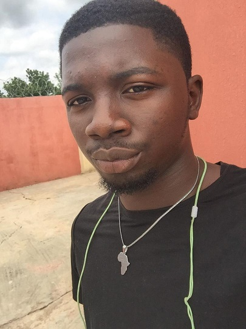

MY ACHIEVEMENT
For me The first achievement I had is obtaining an ‘O’ level certificate with good grades,it’s been challenging back in secondary school. I achieved a lot, being the labour prefect of my school then it was a big one amongst my peers Writing the ‘O’ Examination and making all my paper once is a big achievement for me After my secondary school certificate i also got a technical certificate due to the academic situation of the country, I learned barbing and I graduated the following year respectively For me the two years was a big one for me My admission into kwara state university which is a world class university with one of the best department/courses (library and information science During my stay in the university I achieved so many things which I can boldly boast of.
I’m proudly the social director of the department, with a mind blowing CGPA. Being one of the executives in the department is one of my great achievement in the university. We’ve successfully hosted so many occasions with massive turnout. I’ve had so many great time in the university Which is a great success for me.
Click here for my bold image.